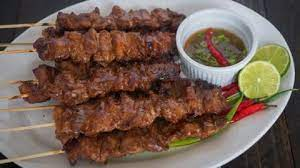
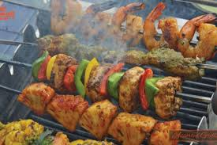
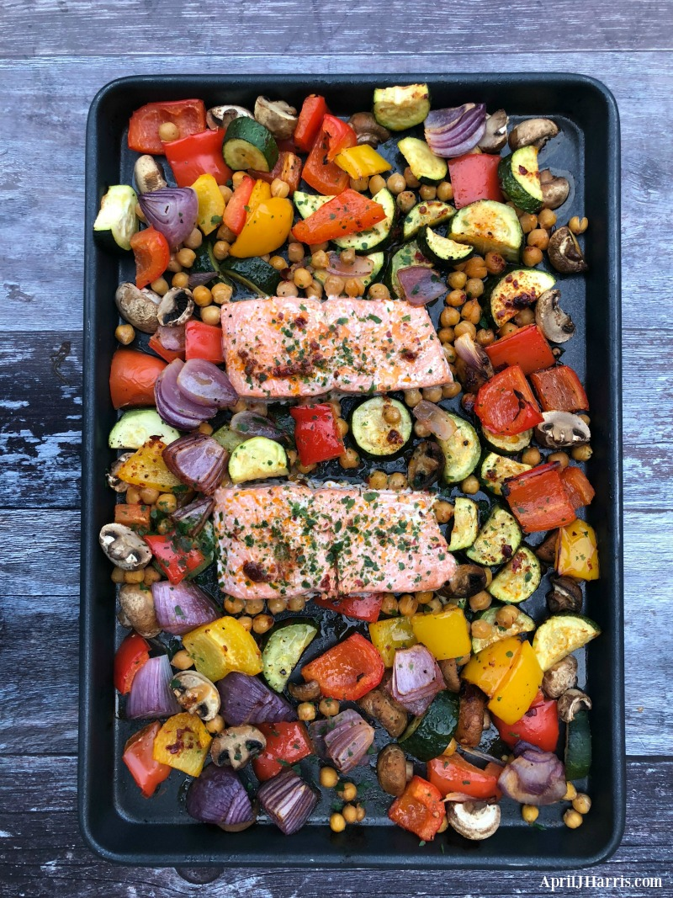

Barbeque
Welcome to the BBQ section of my food blog! I love BBQ food. I love the smell of it cooking, the taste of it, and the feeling of being around friends and family while we eat it. But I also love the humor that surrounds BBQ. For example, have you ever heard the joke about the guy who was so excited about his new BBQ grill that he stayed up all night, tending to the fire? When his wife asked him why he was doing that, he said, "I'm just marinating in anticipation!" Or how about the joke about the two guys who were BBQing in the park? One guy says to the other, "I think I'm going to try grilling a watermelon today." The other guy says, "That's a great idea! But what are you going to do with the rind?" I could go on and on with BBQ jokes, but I think you get the point. BBQ is a funny topic, and I love to have a good laugh about it. So without further ado, let's get to the food! In this section of my blog, I will share my favorite BBQ recipes, tips, and tricks. I will also share some funny stories and anecdotes about BBQ. So whether you're a BBQ novice or a seasoned pro, I hope you enjoy this section of my blog. And who knows, you might even learn a thing or two!
 Continue Journey
Healthy Recipe
If you're looking for healthy recipes that won't make you want to cry, then you've come to the right place! I know what it's like to try to eat healthy and end up with a plate of bland, tasteless food. It's not fun. But that's why I'm here. I'm on a mission to find the most delicious and satisfying healthy recipes out there. So if you're ready to eat healthy without sacrificing taste, then be sure to check out my recipes. You won't be disappointed!"


Continue Journey
Instant Pot
I know what you're thinking. "Instant Pot? That sounds like a kitchen appliance for people who are afraid of cooking!" But I'm here to tell you that the Instant Pot is actually a great way to cook delicious food, even if you're not a master chef. In fact, the Instant Pot is so easy to use, even a caveman could do it! So if you're looking for a way to cook delicious food without spending hours in the kitchen, then you've come to the right place. Here you'll find recipes for everything from soups and stews to pasta dishes and desserts. And all of them can be made in your Instant Pot in under an hour.So what are you waiting for? Start browsing and find your new favorite Instant Pot recipe today!


Continue Journey
Salads Recipe
If you're looking for delicious and satisfying vegetarian recipes that won't make you miss meat, then you've come to the right place! I know what it's like to be a vegetarian and be surrounded by people who eat meat all the time. It can be tough to find food that you enjoy. But that's why I'm here. I'm on a mission to find the most delicious and satisfying vegetarian recipes out there. So if you're ready to eat delicious food without sacrificing your love of animals, then be sure to check out my recipes. You won't be disappointed!


Continue Journey